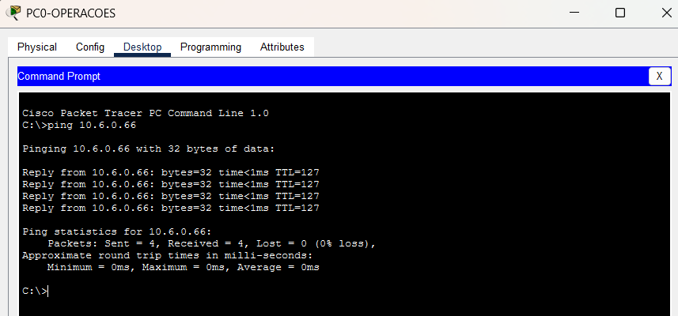

Aura Capital.
Como interligar duas unidades de uma fintech para que a equipe de atendimento acesse os sistemas da matriz?
Planejamento da rede.
Na matriz, 30 pessoas trabalham em Operações e 14 no Administrativo. A filial reúne 18 profissionais de Atendimento que precisam consultar a aplicação hospedada na matriz.
Homologação técnica.
No Cisco Packet Tracer 9.0.1, dois roteadores Cisco 2911 e três switches 2960-24TT conectaram três PCs e um servidor representativos das quatro VLANs testadas.

Ver capturas dos testes




Da simulação ao orçamento.
A proposta de implantação traduz a topologia Cisco em equipamentos comerciais, cabeamento e proteção elétrica para 72 pontos de rede. As cotações do grupo têm como referência 18 de novembro de 2026.